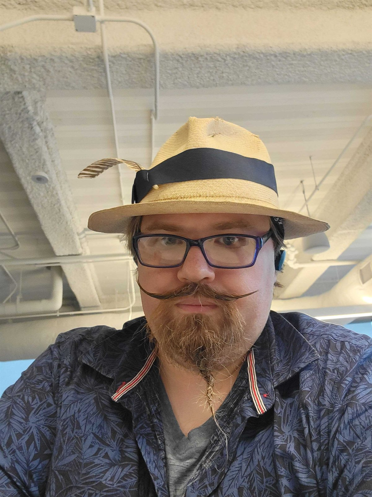

Technical Focus
Systems thinking, playable form.
Joel Croteau works across software engineering, data engineering, data science, and systems science, with public projects spanning simulation work, programming-contest tooling, machine-learning testbeds, and game systems.
At ForgeWalker Studios, Joel brings implementation depth, modeling experience, and a practical engineering lens to technical systems and gameplay development.